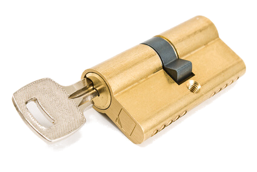

| Öffnungen ohne Schäden in den meisten Fällen ✓ | Öffnungen in ganz Wiesbaden ohne Zusatzkosten* ✓ |

|
|
| 24 Std. Service (Nach 18 Uhr Wird ein Zuschlag auf Anfrage erhoben) ✓ |
A.Aber Fair Schlüsseldienst Rossel– Wer in Wiesbaden wohnt, ist dankbar für einen Schlüsseldienst , der kompetent und schnell aus dem Dilemma hilft. Ebenfalls sollte der Schlüsseldienst zu fairen Preisen erfolgreich arbeiten. Vergessen Sie 0800er Nummern von einem Aufsperrdienst, bei denen Sie auf eine Servicehotline sprechen und ellenlang auf Hilfe warten müssen.
A.Aber Fair Schlüsseldienst Rossel arbeitet für schnelle und fachgerechte Hilfe bei Notöffnungen. Er ist Ihr kompetenter Dienstleister in Sachen Wohnungstür- oder Haustüröffnung. Auch übernehmen wir die Öffnung von schwierigen Schlössern wie z. B. eine Tresoröffnung. Rufen Sie unseren Schlüsselnotruf an und wir öffnen ihren Tresor beschädigungsfrei: +49 175 823 3443.
Ein kompetenter Schlüsselprofi!
Damit Sie sicher sein können, dass Ihnen A schnell und B kompetent geholfen werden kann, ist ein
Ihr Schlüsseldienst für Wiesbaden

Ferner sollte eine präzise Entfernung von abgebrochenen Schlüsseln von den kompetenten Spezialisten möglich sein. Hier ist oftmals filigrane Feinarbeit gefragt, welche wir bei A.Aber Fair ausgezeichnet beherrschen.
Sollten Sie den Schlüssel verloren haben, dann wird Ihnen mit einer Beratung und dem darauf folgenden Einbau eines neuen Schlosses, durch den Schlüsselnotdienst, die Sicherheit Ihrer eigenen vier Wände zurückgegeben. Dies alles und noch viel mehr wird vom Schlüsseldienst zu fairen Preisen erledigt.
Rufen Sie für Ihre Türöffnung für Wiesbaden an: